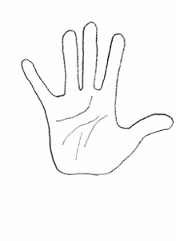

Animais da fauna brasileira. No mato,
estes bichos fofinhos vivem felizes. Mas um deles… viverá uma
reviravolta em seu destino. Ele será forçado a trabalhar voluntariamente
como mascote num evento mundial. Somente um deles será escolhido… Quem
será?
O escolhido foi tu, tatu!

“Pé na tábua, sebo nas canelas. Ripa na xulipa, pernas pra que te quero!” – foi o que o Tatu pensou.
"Atirei o pau no TATU-TUTU"
"Mas o tatu-tutu não VENDEU-DEUDEU"